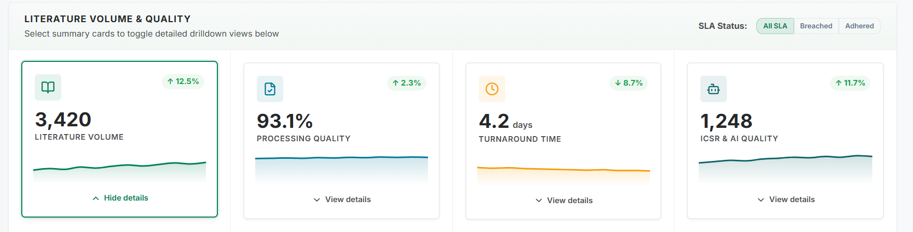

NovaVigil is Pivot Path's AI-native pharmacovigilance platform. It automates case intake, literature screening and signal detection, human-in-the-loop.
Speed is easy to promise. NovaVigil is built to survive the inspection that follows.
It takes the repetitive weight of pharmacovigilance off qualified reviewers, without moving a single safety-relevant decision out of their hands. For the teams that run on it, three things follow.
Intake, screening and coding run continuously, so rising case volumes and launch surges do not force new hires.
Every case carries its source, its coding and a full audit trail, aligned to 21 CFR Part 11 and EU Annex 11.
Automation handles the reading and sorting; your safety physicians spend their time on the calls that matter.
Measured in our own pharmacovigilance operation, before it runs in yours.
NovaVigil brings the core capabilities of pharmacovigilance into a single platform, with your reviewers signing off every safety-relevant decision.

The NovaVigil dashboard: volume, quality and turnaround, in one view.
Each module automates a different safety workflow and lands on the same validated core, coding in MedDRA and submitting in ICH E2B (R3).
Imports, screens and codes the published literature into valid ICSR cases.
Explore Literature Monitoring →Captures safety mailbox reports, de-duplicates them and creates coded cases in your safety database.
Explore Case Intake →Runs qualitative and quantitative analysis and flags terms of interest automatically.
Explore Signal Detection →Built to align with recognised standards.
21 CFR Part 11 EU Annex 11 CIOMS EU AI Act GAMP 5The same platform, three views: literature coming in and being classified, cases created and tracked, and every item reviewed and signed off by a person.
NovaVigil screens, sorts and drafts at a scale no team can staff. Authority stays with qualified people, and the audit trail records every decision. The AI capabilities run on PivotAI, the AI layer inside PivotOS.
Your content stays yours: it is never used to train foundation models and stays tenant-isolated.
Screening, extraction and coding, running continuously across your sources.
Every safety-relevant decision stays with your qualified reviewers.
Each suggestion links to its source and carries a confidence score.
Nothing critical is released without a human reviewer in the chain.
Every action NovaVigil takes and every decision your reviewers make is timestamped and logged, ready to show on demand. That is the difference between a tool that is fast and one you can stake an inspection on.
Read the AI Trust Centre for how we govern AI in regulated work.
We will show intake, screening and the audit trail on your own cases.